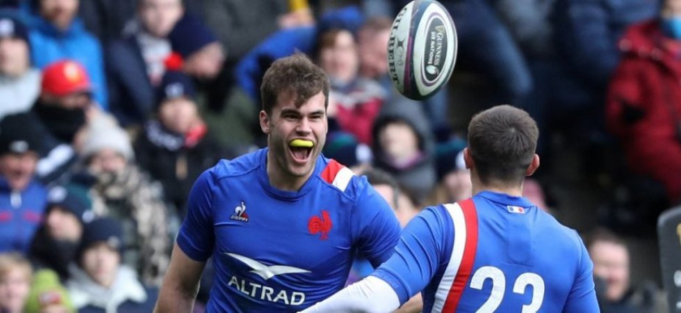
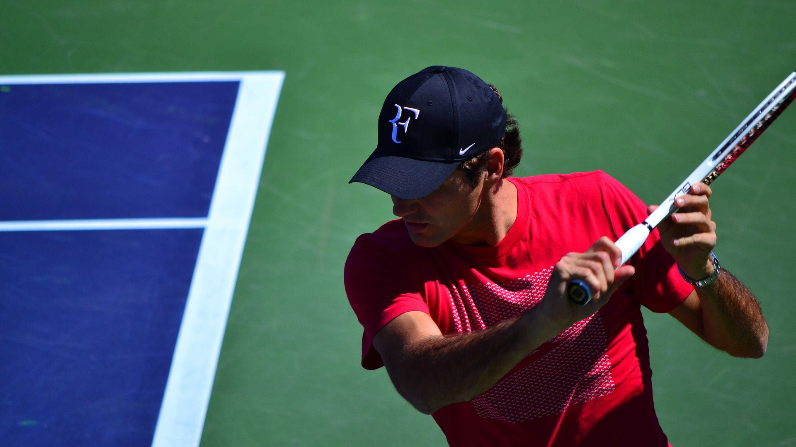

38% of 15-year-olds play sports at least four times a week. More and more sport is an integral part of our life, it allows us to escape, to relax and in the end to feel better about ourselves !

My Favorite rugby teams are :
- France obsvioulsy - The XV of France reinvents itself with each match and revitalizes itself to gain in efficiency thank you Antoine Dupont.
- Sringboks - The Springboks are one of the best teams in the world thanks to their passing game and their group cohesion in addition to their frightening speed.
- All Blakcs - New Zealanders are the kings of rugby. They are unquestionably better since this sport is part of their DNA which is fascinating.

Football is the most played sport in the world
The place of football is almost cultural in our societies. It allows to gather to share moments of glory and history. Despite the salary controversies, the beautiful game and respect make this sport shine.
